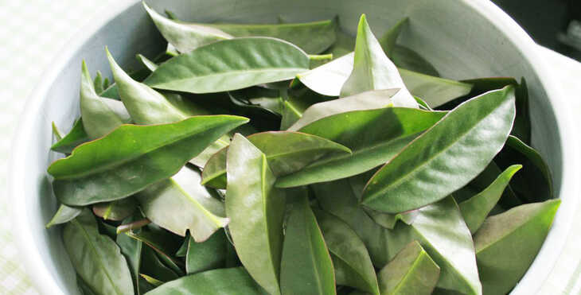

Ora-pro-Nóbis
 Minha escolha foi baseada nas minhas curiosidades
sobre a abundância de nutrientes
e proteinas da Ora-pro-Nobis.
Muda de Ora-Pro-Nóbis
Minha escolha foi baseada nas minhas curiosidades
sobre a abundância de nutrientes
e proteinas da Ora-pro-Nobis.
Muda de Ora-Pro-Nóbis